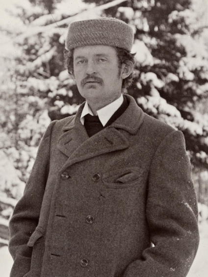
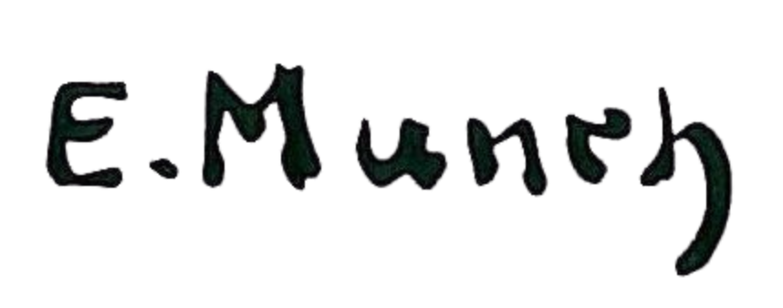

Edvard Munchs liv og historie
Barndom og oppvekst
Edvard Munch ble født 12. desember 1863 i Løten i Norge. Han vokste opp i en familie med fem barn, faren Christian Munch og moren Laura Munch. Barndommen hans var preget av sykdom, sorg og flere tragiske hendelser som skulle påvirke ham resten av livet. Da Edvard bare var fem år gammel, døde moren hans av tuberkulose. Noen år senere døde også storesøsteren Sophie av den samme sykdommen. Tapet av moren og søsteren gjorde sterkt inntrykk på ham, og han utviklet tidlig et nært forhold til tanker om døden, ensomhet og livet.
Etter morens død tok Edvards far mye ansvar for familien. Faren var svært religiøs og kunne være streng. Munch beskrev senere oppveksten som vanskelig, og han opplevde mye frykt og uro hjemme. Han hadde også selv dårlig helse og var ofte syk som barn. Familien ble derfor en viktig del av hvordan han så på verden og menneskelige følelser.
Utdanning og reiser
I 1881 begynte Munch på Den kongelige tegneskole i Kristiania, dagens Oslo. Han hadde opprinnelig blitt forventet å velge en mer praktisk utdanning, men bestemte seg for å satse på kunsten. Han ønsket å uttrykke sine egne tanker og følelser gjennom det han skapte. Etter hvert begynte han å reise til Paris og andre europeiske byer for å lære mer om kunst og møte andre kunstnere. Reisene ga ham nye impulser og hjalp ham med å utvikle sin egen retning.
Kjærlighet og vanskelige år
På slutten av 1800-tallet begynte Munch å få større oppmerksomhet i kunstmiljøet. Samtidig var privatlivet hans komplisert. Han hadde vanskeligheter med kjærlighetsforhold og var ofte redd for å miste mennesker han var glad i. Et av de mest betydningsfulle forholdene hans var med Tulla Larsen. Forholdet var turbulent, og de hadde flere konflikter. I 1902 oppstod det en dramatisk hendelse mellom dem der et vådeskudd gikk av og skadet Munchs venstre hånd. Dette ble en vond opplevelse for ham og bidro til å gjøre forholdet mellom kjærlighet og frykt enda mer komplisert.
Gjennom voksenlivet slet Munch også med alkohol, angst, ensomhet og psykiske utfordringer. Han hadde perioder der han følte seg svært dårlig, og det ble etter hvert vanskelig for ham å håndtere både arbeid og privatliv. I 1908 fikk han et alvorlig psykisk sammenbrudd. Han reiste til København og ble innlagt på en klinikk hvor han fikk behandling. Oppholdet ble et viktig vendepunkt. Han begynte å få bedre kontroll over livet sitt, reduserte alkoholforbruket og klarte gradvis å finne tilbake til en mer stabil hverdag.
Livet på Ekely
Etter dette vendte Munch tilbake til Norge. Han kjøpte eiendommen Ekely i Oslo i 1916, hvor han bodde og arbeidet i mange år. Her levde han mer tilbaketrukket og brukte store deler av tiden på kunsten sin. Han fortsatte å male helt frem til sine siste leveår, selv om han etter hvert ble eldre og fikk dårligere helse.
Nazistene og «degenerert kunst»
Under andre verdenskrig ble kunsten hans også rammet av nazistenes politikk. I 1937 ble flere av verkene hans fjernet fra tyske museer fordi nazistene mente at moderne kunst var uønsket. Dette var en del av nazistenes forfølgelse av det de kalte «degenerert kunst».
Død og ettermæle
Edvard Munch døde 23. januar 1944 på Ekely, 80 år gammel. Før han døde, testamenterte han store deler av kunstsamlingen sin til Oslo kommune. Denne samlingen ble senere grunnlaget for Munchmuseet i Oslo.
I dag regnes Edvard Munch som en av Norges viktigste kunstnere og en sentral person i europeisk kunsthistorie. Livet hans var preget av både store personlige tragedier og perioder med psykiske utfordringer, men han fortsatte å arbeide og utvikle seg gjennom hele livet. Historien hans viser hvordan oppvekst, familie, kjærlighet og personlige erfaringer kan påvirke et menneskes liv og valg.


